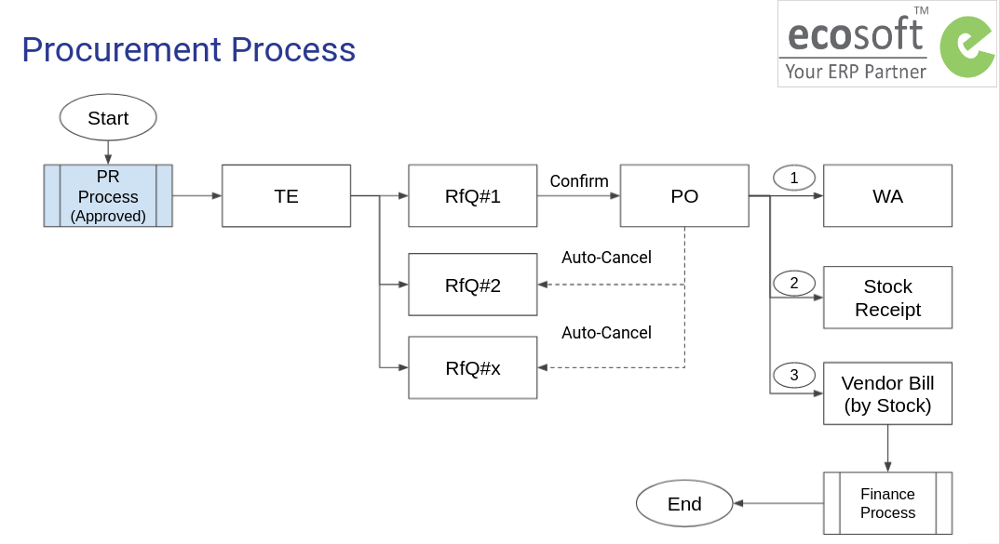

กระบวนการจัดซื้อจัดจ้าง#
กระบวนการนี้เป็นกระบวนการต่อเนื่องจากเอกสาร Purchase Request ที่ได้รับการอนุมัติแล้ว โดยผู้ที่รับผิดชอบในกระบวนการทำงานขั้นตอนต่อไป คือ เจ้าหน้าที่พัสดุที่ได้รับมอบหมาย (Purchase Representative)
วัตถุประสงค์ของกระบวนการนี้ คือ การให้ได้มาซึ่งการจัดซื้อจัดจ้างรวมถึงวัสดุและ/หรือบริการ ประกอบด้วยขั้นตอนหลัก ดังนี้
- เอกสารต้นทางการจัดซื้อจัดจ้าง Purchase Agreement (TE) เพื่อรวบรวมข้อมูลใบเสนอราคาจากผู้ขาย/ผู้ให้บริการที่เกี่ยวข้องทั้งหมดไว้ในระบบ (RFQ)
- การเลือกผู้ขาย/ผู้ให้บริการที่ได้รับการคัดเลือกจากการจัดซื้อจัดจ้าง และออกใบสั่งซื้อจ้าง (RFQ -> PO)
- การตรวจรับสินค้า/บริการโดยคณะกรรมการ (PO -> WA)
- การสร้างใบแจ้งหนี้ในระบบ (PO -> Vendor Bill) เพื่อส่งต่อให้การเงินบัญชี
กระบวนการทั่วไปเป็นดังนี้
- เจ้าหน้าที่พัสดุ (Procurement Officer) สร้างเอกสารต้นทางสำหรับการจัดซื้อจัดจ้าง เพื่อรวบรวมใบเสนอราคาจากผู้ขาย/ผู้ให้บริการ (Purchase Agreement:TE)
- เจ้าหน้าที่พัสดุ บันทึกใบเสนอราคาจากผู้ขาย/ผู้ให้บริการ เข้าระบบโดยการสร้างใบสั่งซื้อสั่งจ้างร่าง/ใบขอราคา RFQs จากหน้าเอกสาร Purchase Agreement:TE
- เจ้าหน้าที่พัสดุ เลือก RFQ ที่ได้รับการคัดเลือก และยืนยันในระบบ เพื่อเปลี่ยนสถานะเอกสารเป็น ใบสั่งซื้อสั่งจ้าง (Purchase Order:PO) และระบบจะยกเลิก RFQ ใบอื่นๆ ที่ไม่ได้รับการคัดเลือกให้อัตโนมัติ
- เจ้าหน้าที่พัสดุ สร้างเอกสารตรวจรับซึ่งจะมีคณะกรรมการการตรวจรับที่แต่งตั้งไว้ตั้งแต่ขั้นตอนการขอซื้อขอจ้าง (Purchase Request:PR)

User Roles#
- Procurement Officer: เจ้าหน้าที่พัสดุ ทำหน้าที่ทุกขั้นตอนเพื่อให้ได้มาซึ่งการตรวจรับพัสดุ
Note
- Procurement Officer จะเห็นเอกสารทั้งหมดในทุก Operating Unit
- Employee ผู้ขอซื้อขอจ้างไม่มีส่วนเกี่ยวข้องกับกระบวนการนี้
Use Cases#
- ไม่ใช่วัสดุเข้าคลัง งวดเดียว